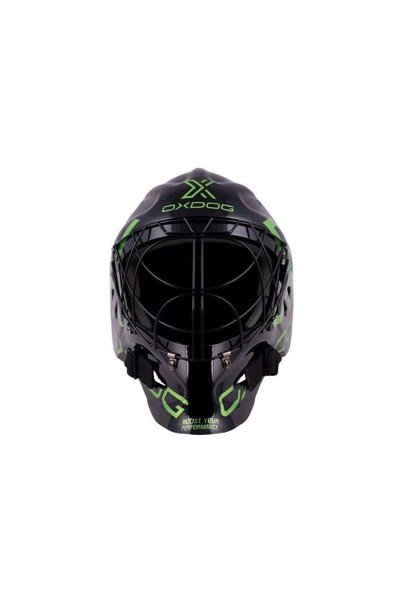

Nová generace brankářských masek OXDOG XGARD s karbonovým skeletem. Díky unikátní mřížce poskytuje o 20 % lepší periferní vidění. Speciální tlumící pěna uvnitř se postará o to, aby ani ta nejtvrdší rána do hlavy neznamenala problém.
Maska je extrémně lehká, takže minimalizuje zátěž krční páteře během dlouhých zápasů.
